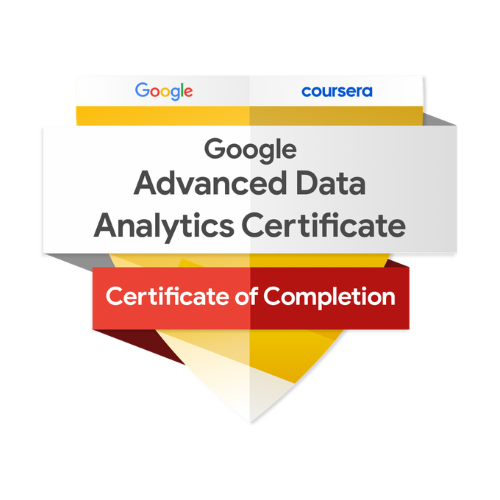

Earners of the Tableau Desktop Specialist title use their foundational knowledge of Tableau Desktop and data analytics to solve problems. They have demonstrated understanding of Tableau core concepts and terminology. Desktop Specialists are able to connect to, prepare, explore and analyze data, and share their insights.
Those who earn the Google Advanced Data Analytics Certificate have completed seven courses that include hands-on, practice-based assessments and are designed to prepare them for advanced roles in data analytics and entry-level roles in data science. They are competent in exploring large datasets, applying data analysis techniques, and building models to extract insights. They are also competent in machine learning, predictive modeling, and statistics.
Those who earn the Google Data Analytics Certificate have completed eight courses, developed by Google, that include hands-on, practice-based assessments and are designed to prepare them for introductory-level roles in Data Analytics. They are competent in tools and platforms including spreadsheets, SQL, Tableau, and R. They know how to prepare, process, analyze, and share data for thoughtful action.
 The Applied Data Analytics Certificate (ADAC) program begins with data modelling, relational database management, and SQL programming, before moving on to Excel, Python, and statistics. Learn best practices and gain hands-on experience using Business Intelligence (BI) and visual analytics tools to build and manage data analytics systems.
The Applied Data Analytics Certificate (ADAC) program begins with data modelling, relational database management, and SQL programming, before moving on to Excel, Python, and statistics. Learn best practices and gain hands-on experience using Business Intelligence (BI) and visual analytics tools to build and manage data analytics systems.